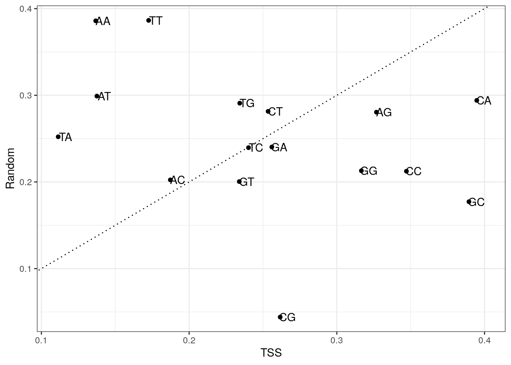
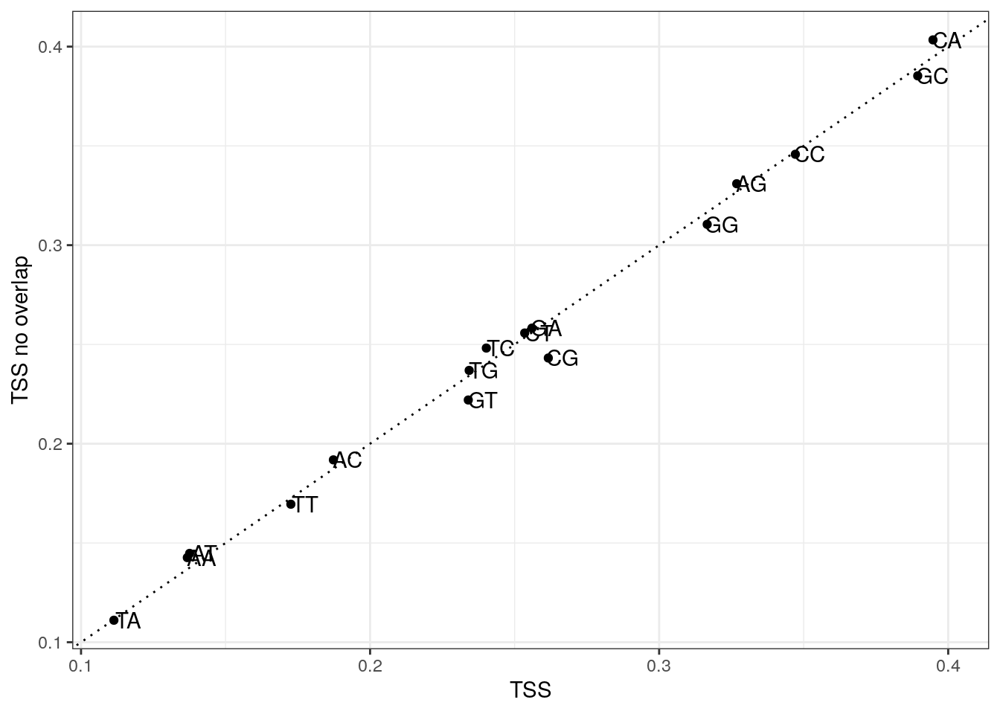
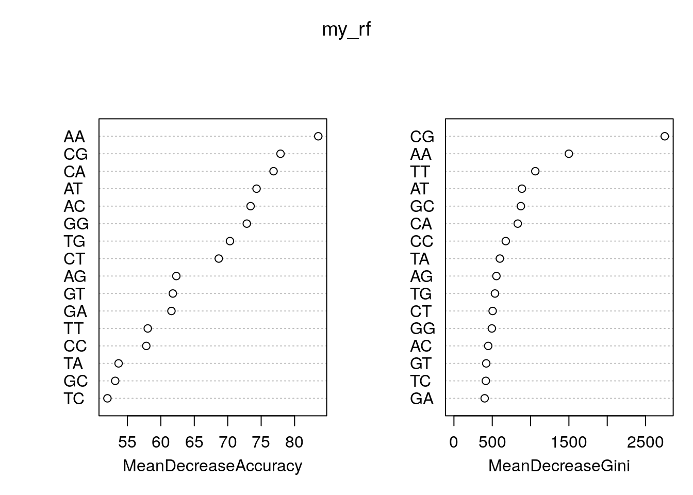
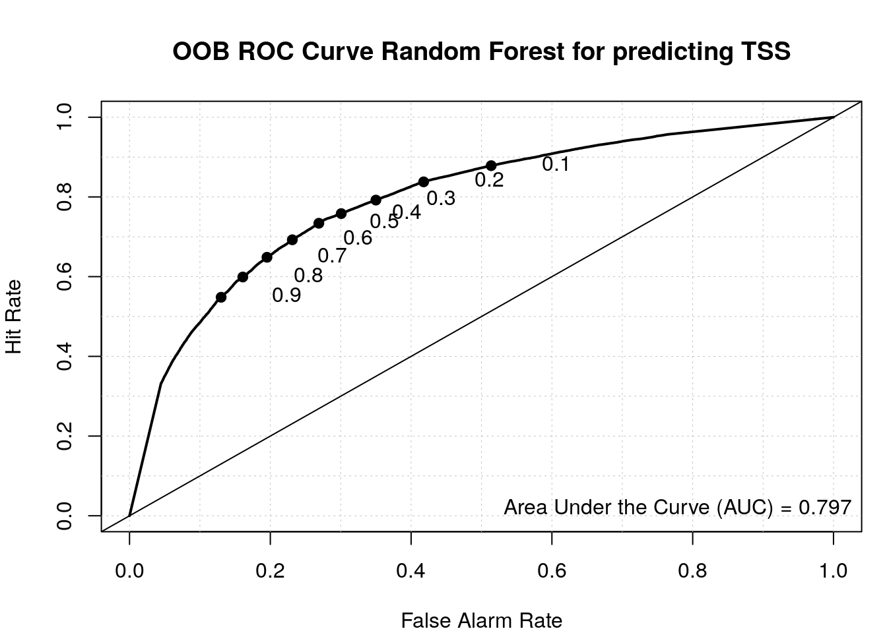
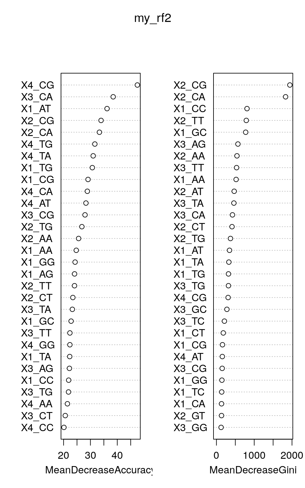

Last updated: 2022-04-26
Checks: 7 0
Knit directory: muse/
This reproducible R Markdown analysis was created with workflowr (version 1.7.0). The Checks tab describes the reproducibility checks that were applied when the results were created. The Past versions tab lists the development history.
Great! Since the R Markdown file has been committed to the Git repository, you know the exact version of the code that produced these results.
Great job! The global environment was empty. Objects defined in the global environment can affect the analysis in your R Markdown file in unknown ways. For reproduciblity it’s best to always run the code in an empty environment.
The command set.seed(20200712) was run prior to running the code in the R Markdown file. Setting a seed ensures that any results that rely on randomness, e.g. subsampling or permutations, are reproducible.
Great job! Recording the operating system, R version, and package versions is critical for reproducibility.
Nice! There were no cached chunks for this analysis, so you can be confident that you successfully produced the results during this run.
Great job! Using relative paths to the files within your workflowr project makes it easier to run your code on other machines.
Great! You are using Git for version control. Tracking code development and connecting the code version to the results is critical for reproducibility.
The results in this page were generated with repository version 56b1a79. See the Past versions tab to see a history of the changes made to the R Markdown and HTML files.
Note that you need to be careful to ensure that all relevant files for the analysis have been committed to Git prior to generating the results (you can use wflow_publish or wflow_git_commit). workflowr only checks the R Markdown file, but you know if there are other scripts or data files that it depends on. Below is the status of the Git repository when the results were generated:
Ignored files:
Ignored: .Rhistory
Ignored: .Rproj.user/
Ignored: r_packages_4.1.2/
Untracked files:
Untracked: analysis/cell_ranger.Rmd
Unstaged changes:
Modified: .Rprofile
Note that any generated files, e.g. HTML, png, CSS, etc., are not included in this status report because it is ok for generated content to have uncommitted changes.
These are the previous versions of the repository in which changes were made to the R Markdown (analysis/tss_predict.Rmd) and HTML (docs/tss_predict.html) files. If you’ve configured a remote Git repository (see ?wflow_git_remote), click on the hyperlinks in the table below to view the files as they were in that past version.
| File | Version | Author | Date | Message |
|---|---|---|---|---|
| Rmd | 56b1a79 | Dave Tang | 2022-04-26 | Positional di-nuc freq |
| html | fd116a1 | Dave Tang | 2022-04-24 | Build site. |
| Rmd | 0616464 | Dave Tang | 2022-04-24 | Random forest model |
| html | fd41c75 | Dave Tang | 2022-04-22 | Build site. |
| Rmd | e372c81 | Dave Tang | 2022-04-22 | TSS |
Transcriptional starting sites (TSSs) demarcate the first position in the DNA sequence that gets transcribed into RNA. In this work, we will try to build a classifier to try to predict TSSs. We will train our classifier using the NCBI Reference Sequence Database also known as RefSeq.
Function for loading required Bioconductor packages (and install them first, if missing).
load_package <- function(x, source = "bioc"){
if(!require(x, character.only = TRUE, quietly = TRUE)){
if (source == "bioc"){
BiocManager::install(x, character.only = TRUE)
} else if (source == "cran"){
install.packages(x, character.only = TRUE)
} else {
stop("Unrecognised source")
}
library(x, character.only = TRUE)
}
}We will use the Bioconductor package biomaRt to download the entire collection of RefSeq sequences.
load_package('biomaRt')Find the human gene set.
ensembl <- useMart('ensembl', host = params$host)
biomaRt::listDatasets(ensembl) %>%
filter(grepl('human', description, TRUE)) dataset description version
1 hsapiens_gene_ensembl Human genes (GRCh38.p13) GRCh38.p13Find RefSeq attributes.
ensembl <- useMart('ensembl', dataset = 'hsapiens_gene_ensembl', host = params$host)
listAttributes(ensembl) %>%
filter(grepl('refseq', description, TRUE)) name description
1 transcript_mane_select RefSeq match transcript (MANE Select)
2 transcript_mane_plus_clinical RefSeq match transcript (MANE Plus Clinical)
3 refseq_mrna RefSeq mRNA ID
4 refseq_mrna_predicted RefSeq mRNA predicted ID
5 refseq_ncrna RefSeq ncRNA ID
6 refseq_ncrna_predicted RefSeq ncRNA predicted ID
7 refseq_peptide RefSeq peptide ID
8 refseq_peptide_predicted RefSeq peptide predicted ID
page
1 feature_page
2 feature_page
3 feature_page
4 feature_page
5 feature_page
6 feature_page
7 feature_page
8 feature_pageFetch all RefSeq mRNAs on assembled chromosomes.
my_chr <- c(1:22, 'X', 'Y')
my_refseq <- getBM(
attributes='refseq_mrna',
filters = 'chromosome_name',
values = my_chr,
mart = ensembl
)Number of RefSeq IDs.
dim(my_refseq)[1] 61953 1Build table. Note that when working with transcripts, use the attributes transcript_start and transcript_end, and not the attributes start_position and end_position; using those will give you the Ensembl gene coordinates and not the RefSeq coordinates, which is what we want! (I have retrieved the Ensembl coordinates for illustrative purposes.)
my_att <- c(
'refseq_mrna',
'chromosome_name',
'transcript_start',
'transcript_end',
'start_position',
'end_position',
'strand'
)
my_refseq_loci <- getBM(
attributes = my_att,
filters = c('refseq_mrna', 'chromosome_name'),
values = list(refseq_mrna = my_refseq$refseq_mrna, chromosome_name = my_chr),
mart = ensembl
)Check out the table.
head(my_refseq_loci) refseq_mrna chromosome_name transcript_start transcript_end start_position
1 NM_000015 8 18391282 18401218 18391282
2 NM_000021 14 73136507 73223691 73136418
3 NM_000053 13 51932669 52011450 51930436
4 NM_000059 13 32315508 32400268 32315086
5 NM_000071 21 43053191 43075835 43053191
6 NM_000084 X 50067576 50092406 49922596
end_position strand
1 18401218 1
2 73223691 1
3 52012125 -1
4 32400268 1
5 43076943 -1
6 50099235 1Check for duplicated entries.
table(duplicated(my_refseq_loci$refseq_mrna))
FALSE TRUE
61953 25 Removed duplicated entries.
my_refseq_loci_uniq <- my_refseq_loci[!duplicated(my_refseq_loci$refseq_mrna),]
dim(my_refseq_loci_uniq)[1] 61953 7We will modify chromosome_name and strand to make it compatible with BSgenome.Hsapiens.UCSC.hg38.
my_refseq_loci_uniq %>%
mutate(strand = ifelse(strand == 1, yes = '+', no = '-')) %>%
mutate(chromosome_name = sub("^", "chr", chromosome_name)) -> my_refseq_loci_uniq
head(my_refseq_loci_uniq) refseq_mrna chromosome_name transcript_start transcript_end start_position
1 NM_000015 chr8 18391282 18401218 18391282
2 NM_000021 chr14 73136507 73223691 73136418
3 NM_000053 chr13 51932669 52011450 51930436
4 NM_000059 chr13 32315508 32400268 32315086
5 NM_000071 chr21 43053191 43075835 43053191
6 NM_000084 chrX 50067576 50092406 49922596
end_position strand
1 18401218 +
2 73223691 +
3 52012125 -
4 32400268 +
5 43076943 -
6 50099235 +The TSS is transcript_start when the transcript is on the + strand and is transcript_end on the - strand. We want to retrieve sequence upstream and downstream of the TSS, so we will subtract and add coordinates accordingly.
my_tss <- list()
my_tss$loci <- my_refseq_loci_uniq %>%
dplyr::select(-c(start_position, end_position)) %>%
mutate(tss_start = if_else(strand == "+", transcript_start - params$span, transcript_end - params$span)) %>%
mutate(tss_end = if_else(strand == "+", transcript_start + params$span, transcript_end + params$span))
head(my_tss$loci) refseq_mrna chromosome_name transcript_start transcript_end strand tss_start
1 NM_000015 chr8 18391282 18401218 + 18391280
2 NM_000021 chr14 73136507 73223691 + 73136505
3 NM_000053 chr13 51932669 52011450 - 52011448
4 NM_000059 chr13 32315508 32400268 + 32315506
5 NM_000071 chr21 43053191 43075835 - 43075833
6 NM_000084 chrX 50067576 50092406 + 50067574
tss_end
1 18391284
2 73136509
3 52011452
4 32315510
5 43075837
6 50067578Sample a bunch of random sequences in hg38.
load_package('BSgenome.Hsapiens.UCSC.hg38')Save chromosomes and their sizes.
hg38_ref <- seqnames(BSgenome.Hsapiens.UCSC.hg38)
hg38_chr <- hg38_ref[!grepl("_", hg38_ref)]
hg38_chr <- hg38_chr[!grepl("chrM", hg38_chr)]
hg38_chr_size <- sapply(hg38_chr, function(x){
length(BSgenome.Hsapiens.UCSC.hg38[[x]])
})
head(hg38_chr_size) chr1 chr2 chr3 chr4 chr5 chr6
248956422 242193529 198295559 190214555 181538259 170805979 Sample chromosome based on length of chromosome.
set.seed(1984)
n <- nrow(my_tss$loci)
schr <- sample(
hg38_chr,
n,
TRUE,
prob = hg38_chr_size/sum(hg38_chr_size)
)
sstrand <- sample(c("+", "-"), n, TRUE)
sstart <- sapply(schr, function(x){
sample(hg38_chr_size[x] - (params$span * 2), 1)
})
send <- sstart + (params$span*2)
my_random <- list()
my_random$loci <- data.frame(
chr = schr,
start = sstart,
end = send,
strand = sstrand
)
head(my_random$loci) chr start end strand
1 chr10 132635027 132635031 -
2 chr7 115323451 115323455 -
3 chr6 27058086 27058090 -
4 chr5 164216413 164216417 +
5 chr13 1446812 1446816 +
6 chr17 52786687 52786691 -Since some of the randomly sampled regions may overlap/intersect with TSSs, I used the GenomicRanges package to remove these overlapping regions:
load_package("GenomicRanges")Create a GRanges object given an object, my_refseq_loci
my_tss$gr <- with(
my_tss$loci,
GRanges(chromosome_name,
IRanges(tss_start, tss_end, names = refseq_mrna),
strand
)
)
head(my_tss$gr)GRanges object with 6 ranges and 0 metadata columns:
seqnames ranges strand
<Rle> <IRanges> <Rle>
NM_000015 chr8 18391280-18391284 +
NM_000021 chr14 73136505-73136509 +
NM_000053 chr13 52011448-52011452 -
NM_000059 chr13 32315506-32315510 +
NM_000071 chr21 43075833-43075837 -
NM_000084 chrX 50067574-50067578 +
-------
seqinfo: 24 sequences from an unspecified genome; no seqlengthsCreate random GRanges object.
my_random$gr <- with(
my_random$loci,
GRanges(chr,
IRanges(start, end, names = paste(chr, start, end, sep = "_")),
strand
)
)
head(my_random$gr)GRanges object with 6 ranges and 0 metadata columns:
seqnames ranges strand
<Rle> <IRanges> <Rle>
chr10_132635027_132635031 chr10 132635027-132635031 -
chr7_115323451_115323455 chr7 115323451-115323455 -
chr6_27058086_27058090 chr6 27058086-27058090 -
chr5_164216413_164216417 chr5 164216413-164216417 +
chr13_1446812_1446816 chr13 1446812-1446816 +
chr17_52786687_52786691 chr17 52786687-52786691 -
-------
seqinfo: 24 sequences from an unspecified genome; no seqlengthsOverlap between random regions and TSS’s. Note that there are cases where a random region overlaps more than one TSS, which indicates that TSS regions are overlapping.
table(countOverlaps(my_random$gr, my_tss$gr))
0 1 4 5
61947 4 1 1 Remove overlapping random sites.
my_random$loci_no <- my_random$loci[countOverlaps(my_random$gr, my_tss$gr) == 0, ]
dim(my_random$loci_no)[1] 61947 4Check overlapping TSS regions.
table(countOverlaps(my_tss$gr, my_tss$gr, minoverlap = 1))
1 2 3 4 5 6 7 8 9 10 11 12 13
25851 11455 5969 3918 2691 1911 1455 1051 1015 834 663 557 475
14 15 16 17 18 19 20 21 22 23 24 25 26
430 258 363 394 280 258 220 209 155 92 96 75 96
27 28 29 30 31 32 33 35 36 38 43 44 45
62 168 87 30 62 64 66 105 108 76 43 44 45
46 50 54 72
46 50 54 72 Create a set of non-overlapping TSS regions (the conditional is == 1 because we are comparing regions against itself and 1 is the self overlap), where a TSS does not overlap by a single bp.
my_tss$loci_no <- my_tss$loci[countOverlaps(my_tss$gr, my_tss$gr, minoverlap = 1) == 1, ]
dim(my_tss$loci_no)[1] 25851 7Now to fetch the sequences and calculate the dinucleotide frequencies:
my_random$seq <- getSeq(
BSgenome.Hsapiens.UCSC.hg38,
names = my_random$loci$chr,
start = my_random$loci$start,
end = my_random$loci$end,
strand = my_random$loci$strand
)
head(my_random$seq)DNAStringSet object of length 6:
width seq names
[1] 5 CATCA chr10
[2] 5 CTAGT chr7
[3] 5 AGAAT chr6
[4] 5 AATGT chr5
[5] 5 NNNNN chr13
[6] 5 TTACT chr17Remove entries with N’s.
my_random$seq <- my_random$seq[! grepl("N", my_random$seq)]
head(my_random$seq)DNAStringSet object of length 6:
width seq names
[1] 5 CATCA chr10
[2] 5 CTAGT chr7
[3] 5 AGAAT chr6
[4] 5 AATGT chr5
[5] 5 TTACT chr17
[6] 5 CCTCC chr1Obtain TSS sequences.
my_tss$seq <- getSeq(
BSgenome.Hsapiens.UCSC.hg38,
names = my_tss$loci$chromosome_name,
start = my_tss$loci$tss_start,
end = my_tss$loci$tss_end,
strand = my_tss$loci$strand
)
my_tss$seq <- my_tss$seq[! grepl("N", my_tss$seq)]
head(my_tss$seq)DNAStringSet object of length 6:
width seq names
[1] 5 GCACT chr8
[2] 5 TCGGA chr14
[3] 5 CCCTC chr13
[4] 5 GCAGA chr13
[5] 5 GGGTC chr21
[6] 5 CAGGG chrXObtain TSS sequences non-overlapping.
my_tss$seq_no <- getSeq(
BSgenome.Hsapiens.UCSC.hg38,
names = my_tss$loci_no$chromosome_name,
start = my_tss$loci_no$tss_start,
end = my_tss$loci_no$tss_end,
strand = my_tss$loci_no$strand
)
my_tss$seq_no <- my_tss$seq_no[! grepl("N", my_tss$seq_no)]
head(my_tss$seq_no)DNAStringSet object of length 6:
width seq names
[1] 5 GCACT chr8
[2] 5 TCGGA chr14
[3] 5 CCCTC chr13
[4] 5 GCAGA chr13
[5] 5 CAGGG chrX
[6] 5 TCACG chr20Calculate the di-nucleotide frequency.
my_random$di <- dinucleotideFrequency(my_random$seq)
colSums(my_random$di) AA AC AG AT CA CC CG CT GA GC GG GT TA
23038 11832 16208 18247 16874 12151 2429 16470 13965 10067 12230 12207 15480
TC TG TT
14141 17269 23132 my_tss$di <- dinucleotideFrequency(my_tss$seq)
colSums(my_tss$di) AA AC AG AT CA CC CG CT GA GC GG GT TA
8678 11634 20201 8509 24443 21320 16226 15711 15760 24256 19408 14537 6959
TC TG TT
14903 14539 10728 my_tss$di_no <- dinucleotideFrequency(my_tss$seq_no)
colSums(my_tss$di_no) AA AC AG AT CA CC CG CT GA GC GG GT TA
3721 4956 8551 3729 10443 8911 6271 6625 6646 9977 8019 5738 2861
TC TG TT
6439 6118 4399 Plot di-nucleotide frequencies between TSS and random regions.
my_df <- data.frame(
x = colMeans(my_tss$di),
y = colMeans(my_random$di),
di = colnames(my_tss$di)
)
ggplot(my_df, aes(x, y, label = di)) +
geom_point() +
geom_text(nudge_x = 0.005) +
geom_abline(slope = 1, lty = 3) +
labs(x = "TSS", y = "Random") +
theme_bw()
| Version | Author | Date |
|---|---|---|
| fd116a1 | Dave Tang | 2022-04-24 |
Plot di-nucleotide frequencies between overlapping and non-overlapping TSS regions.
my_df <- data.frame(
x = colMeans(my_tss$di),
y = colMeans(my_tss$di_no),
di = colnames(my_tss$di)
)
ggplot(my_df, aes(x, y, label = di)) +
geom_point() +
geom_text(nudge_x = 0.005) +
geom_abline(slope = 1, lty = 3) +
labs(x = "TSS", y = "TSS no overlap") +
theme_bw()
Use Random Forests to train a predictor using the TSSs and random di-nucleotide frequencies.
load_package('randomForest', source = "cran")Combine TSS and random data.
as.data.frame(my_tss$di) %>%
mutate(class = 'tss') -> my_data
as.data.frame(my_random$di) %>%
mutate(class = 'random') %>%
rbind(my_data) %>%
mutate(class = factor(class)) -> my_data
dim(my_data)[1] 120888 17Split 80/20.
set.seed(1984)
idx <- sample(nrow(my_data), nrow(my_data)*0.8)
train <- my_data[idx, ]
test <- my_data[-idx, ]
dim(train)[1] 96710 17dim(test)[1] 24178 17Train Random Forest.
my_rf <- randomForest(
class ~ .,
data = train,
importance = TRUE,
do.trace = 100,
ntree = 200
)ntree OOB 1 2
100: 26.89% 26.77% 27.00%
200: 26.85% 26.47% 27.22%my_rf
Call:
randomForest(formula = class ~ ., data = train, importance = TRUE, do.trace = 100, ntree = 200)
Type of random forest: classification
Number of trees: 200
No. of variables tried at each split: 4
OOB estimate of error rate: 26.85%
Confusion matrix:
random tss class.error
random 34622 12462 0.2646759
tss 13508 36118 0.2721960Feature importance.
rn <- round(importance(my_rf), 2)
rn[order(rn[,3], decreasing=TRUE),] random tss MeanDecreaseAccuracy MeanDecreaseGini
AA 21.74 40.17 52.33 1505.47
AT -1.87 44.72 48.11 939.64
GG -3.66 35.79 47.02 478.09
CA -26.74 45.55 46.95 858.20
CG 34.59 34.79 46.47 2599.94
CT 15.54 27.60 45.84 488.97
AC -0.84 34.24 45.43 442.64
GT 8.18 29.41 43.86 418.54
TG 5.15 32.84 39.78 545.91
AG -13.89 34.59 39.47 539.19
TT 10.58 31.98 39.28 1103.73
GA -15.40 36.52 38.76 394.84
TA -10.21 32.41 35.69 623.41
CC 2.66 33.37 34.07 699.46
TC 12.13 21.00 32.92 428.78
GC 18.90 25.14 31.12 1014.36As a plot.
varImpPlot(my_rf)
| Version | Author | Date |
|---|---|---|
| fd116a1 | Dave Tang | 2022-04-24 |
Predict.
data.predict <- predict(my_rf, test)
prop.table(table(observed = test$class, predict = data.predict), 1) predict
observed random tss
random 0.7326808 0.2673192
tss 0.2746005 0.7253995Use pROC package to get area under curve.
load_package("pROC", source = "cran")Check ROC.
roc(my_rf$y, my_rf$votes[, 'random'])Setting levels: control = random, case = tssSetting direction: controls > cases
Call:
roc.default(response = my_rf$y, predictor = my_rf$votes[, "random"])
Data: my_rf$votes[, "random"] in 47084 controls (my_rf$y random) > 49626 cases (my_rf$y tss).
Area under the curve: 0.7945Plot ROC with the verification package.
load_package('verification', source = "cran")Plot ROC.
aucc <- roc.area(as.integer(train$class=='tss'), my_rf$votes[,2])$A
roc.plot(as.integer(train$class=='tss'), my_rf$votes[,2], main="")Warning in roc.plot.default(as.integer(train$class == "tss"), my_rf$votes[, :
Large amount of unique predictions used as thresholds. Consider specifying
thresholds.legend("bottomright", bty="n", sprintf("Area Under the Curve (AUC) = %1.3f", aucc))
title(main="OOB ROC Curve Random Forest for predicting TSS")
| Version | Author | Date |
|---|---|---|
| fd116a1 | Dave Tang | 2022-04-24 |
The nucleotideFrequencyAt function will return the single nucleotide frequency at a specific location.
nucleotideFrequencyAt(my_tss$seq, 3) A C G T
25775 9399 23652 3127 Use sapply to calculate at all sites.
There is a higher CT (pyrimidine) ratio one position before the TSS (second column) and a higher AG (purine) ratio at the TSS (third column) forming the classic pyrimidine–purine (PyPu) di-nucleotide at a TSS.
nuc_freq <- sapply(1:((params$span*2)+1), function(x) nucleotideFrequencyAt(my_tss$seq, x))
apply(nuc_freq, 2, function(x) x/sum(x)) [,1] [,2] [,3] [,4] [,5]
A 0.1251755 0.09239262 0.41604119 0.1576679 0.2352267
C 0.3242781 0.51500331 0.15171178 0.2631834 0.2340968
G 0.3270221 0.15193776 0.38177328 0.3330912 0.2691234
T 0.2235243 0.24066631 0.05047375 0.2460575 0.2615531Calculate di-nucleotide frequencies at all sites.
dinuc_freq_tss <- lapply(1:(params$span*2), function(x){
dinucleotideFrequency(subseq(my_tss$seq, x, x+1))
})
dinuc_freq_random <- lapply(1:(params$span*2), function(x){
dinucleotideFrequency(subseq(my_random$seq, x, x+1))
})
dinuc_freq_tss_df <- do.call(cbind.data.frame, dinuc_freq_tss)
dinuc_freq_random_df <- do.call(cbind.data.frame, dinuc_freq_random)
my_colname <- paste0(
'X',
rep(1:(params$span*2), each = 16),
"_",
colnames(dinuc_freq_tss_df)[1:16]
)
colnames(dinuc_freq_tss_df) <- my_colname
colnames(dinuc_freq_random_df) <- my_colname
head(dinuc_freq_tss_df) X1_AA X1_AC X1_AG X1_AT X1_CA X1_CC X1_CG X1_CT X1_GA X1_GC X1_GG X1_GT X1_TA
1 0 0 0 0 0 0 0 0 0 1 0 0 0
2 0 0 0 0 0 0 0 0 0 0 0 0 0
3 0 0 0 0 0 1 0 0 0 0 0 0 0
4 0 0 0 0 0 0 0 0 0 1 0 0 0
5 0 0 0 0 0 0 0 0 0 0 1 0 0
6 0 0 0 0 1 0 0 0 0 0 0 0 0
X1_TC X1_TG X1_TT X2_AA X2_AC X2_AG X2_AT X2_CA X2_CC X2_CG X2_CT X2_GA X2_GC
1 0 0 0 0 0 0 0 1 0 0 0 0 0
2 1 0 0 0 0 0 0 0 0 1 0 0 0
3 0 0 0 0 0 0 0 0 1 0 0 0 0
4 0 0 0 0 0 0 0 1 0 0 0 0 0
5 0 0 0 0 0 0 0 0 0 0 0 0 0
6 0 0 0 0 0 1 0 0 0 0 0 0 0
X2_GG X2_GT X2_TA X2_TC X2_TG X2_TT X3_AA X3_AC X3_AG X3_AT X3_CA X3_CC X3_CG
1 0 0 0 0 0 0 0 1 0 0 0 0 0
2 0 0 0 0 0 0 0 0 0 0 0 0 0
3 0 0 0 0 0 0 0 0 0 0 0 0 0
4 0 0 0 0 0 0 0 0 1 0 0 0 0
5 1 0 0 0 0 0 0 0 0 0 0 0 0
6 0 0 0 0 0 0 0 0 0 0 0 0 0
X3_CT X3_GA X3_GC X3_GG X3_GT X3_TA X3_TC X3_TG X3_TT X4_AA X4_AC X4_AG X4_AT
1 0 0 0 0 0 0 0 0 0 0 0 0 0
2 0 0 0 1 0 0 0 0 0 0 0 0 0
3 1 0 0 0 0 0 0 0 0 0 0 0 0
4 0 0 0 0 0 0 0 0 0 0 0 0 0
5 0 0 0 0 1 0 0 0 0 0 0 0 0
6 0 0 0 1 0 0 0 0 0 0 0 0 0
X4_CA X4_CC X4_CG X4_CT X4_GA X4_GC X4_GG X4_GT X4_TA X4_TC X4_TG X4_TT
1 0 0 0 1 0 0 0 0 0 0 0 0
2 0 0 0 0 1 0 0 0 0 0 0 0
3 0 0 0 0 0 0 0 0 0 1 0 0
4 0 0 0 0 1 0 0 0 0 0 0 0
5 0 0 0 0 0 0 0 0 0 1 0 0
6 0 0 0 0 0 0 1 0 0 0 0 0Combine TSS and random data.
dinuc_freq_tss_df %>%
mutate(class = 'tss') -> my_data2
dinuc_freq_random_df %>%
mutate(class = 'random') %>%
rbind(my_data2) %>%
mutate(class = factor(class)) -> my_data2
dim(my_data2)[1] 120888 65Split 80/20.
set.seed(1984)
idx <- sample(nrow(my_data2), nrow(my_data2)*0.8)
train2 <- my_data2[idx, ]
test2 <- my_data2[-idx, ]
dim(train2)[1] 96710 65dim(test2)[1] 24178 65Train Random Forest.
my_rf2 <- randomForest(
class ~ .,
data = train2,
importance = TRUE,
do.trace = 100,
ntree = 200
)ntree OOB 1 2
100: 23.53% 25.82% 21.36%
200: 23.56% 26.09% 21.16%my_rf2
Call:
randomForest(formula = class ~ ., data = train2, importance = TRUE, do.trace = 100, ntree = 200)
Type of random forest: classification
Number of trees: 200
No. of variables tried at each split: 8
OOB estimate of error rate: 23.56%
Confusion matrix:
random tss class.error
random 34802 12282 0.2608529
tss 10501 39125 0.2116028Feature importance.
rn2 <- round(importance(my_rf2), 2)
head(rn2[order(rn2[,3], decreasing=TRUE),]) random tss MeanDecreaseAccuracy MeanDecreaseGini
X4_CG 16.35 23.54 26.19 299.22
X1_AT 28.87 7.19 24.64 373.22
X2_CG 29.80 12.67 23.00 2091.22
X3_CA 23.48 7.72 22.45 323.41
X4_TA 18.52 9.46 20.97 142.35
X1_TG 19.69 5.41 20.80 328.67As a plot.
varImpPlot(my_rf2)
Compare prediction results of our first model and our second model.
# results from first model
data.predict <- predict(my_rf, test)
prop.table(table(observed = test$class, predict = data.predict), 1) predict
observed random tss
random 0.7326808 0.2673192
tss 0.2747627 0.7252373# results from second model
data.predict2 <- predict(my_rf2, test2)
prop.table(table(observed = test2$class, predict = data.predict2), 1) predict
observed random tss
random 0.7383343 0.2616657
tss 0.2103513 0.7896487By including the positional information of the di-nucleotides, we have a better TSS classifier, which makes sense since not all the bases upstream and downstream of the TSS have a nucleotide preference and thus were diluting the signal in our first model where we calculated the overall di-nucleotide frequency.
sessionInfo()R version 4.1.2 (2021-11-01)
Platform: x86_64-pc-linux-gnu (64-bit)
Running under: Ubuntu 20.04.3 LTS
Matrix products: default
BLAS/LAPACK: /usr/lib/x86_64-linux-gnu/openblas-pthread/libopenblasp-r0.3.8.so
locale:
[1] LC_CTYPE=en_US.UTF-8 LC_NUMERIC=C
[3] LC_TIME=en_US.UTF-8 LC_COLLATE=en_US.UTF-8
[5] LC_MONETARY=en_US.UTF-8 LC_MESSAGES=en_US.UTF-8
[7] LC_PAPER=en_US.UTF-8 LC_NAME=C
[9] LC_ADDRESS=C LC_TELEPHONE=C
[11] LC_MEASUREMENT=en_US.UTF-8 LC_IDENTIFICATION=C
attached base packages:
[1] stats4 stats graphics grDevices utils datasets methods
[8] base
other attached packages:
[1] verification_1.42 dtw_1.22-3
[3] proxy_0.4-26 CircStats_0.2-6
[5] MASS_7.3-54 boot_1.3-28
[7] fields_13.3 viridis_0.6.2
[9] viridisLite_0.4.0 spam_2.8-0
[11] pROC_1.18.0 randomForest_4.7-1
[13] BSgenome.Hsapiens.UCSC.hg38_1.4.4 BSgenome_1.62.0
[15] rtracklayer_1.54.0 Biostrings_2.62.0
[17] XVector_0.34.0 GenomicRanges_1.46.1
[19] GenomeInfoDb_1.30.1 IRanges_2.28.0
[21] S4Vectors_0.32.4 BiocGenerics_0.40.0
[23] biomaRt_2.50.3 forcats_0.5.1
[25] stringr_1.4.0 dplyr_1.0.7
[27] purrr_0.3.4 readr_2.1.1
[29] tidyr_1.1.4 tibble_3.1.6
[31] ggplot2_3.3.5 tidyverse_1.3.1
[33] workflowr_1.7.0
loaded via a namespace (and not attached):
[1] colorspace_2.0-2 rjson_0.2.21
[3] ellipsis_0.3.2 rprojroot_2.0.2
[5] fs_1.5.2 rstudioapi_0.13
[7] farver_2.1.0 bit64_4.0.5
[9] AnnotationDbi_1.56.2 fansi_1.0.2
[11] lubridate_1.8.0 xml2_1.3.3
[13] cachem_1.0.6 knitr_1.37
[15] jsonlite_1.7.3 Rsamtools_2.10.0
[17] broom_0.7.11 dbplyr_2.1.1
[19] png_0.1-7 compiler_4.1.2
[21] httr_1.4.2 backports_1.4.1
[23] assertthat_0.2.1 Matrix_1.3-4
[25] fastmap_1.1.0 cli_3.1.1
[27] later_1.3.0 htmltools_0.5.2
[29] prettyunits_1.1.1 tools_4.1.2
[31] dotCall64_1.0-1 gtable_0.3.0
[33] glue_1.6.1 GenomeInfoDbData_1.2.7
[35] maps_3.4.0 rappdirs_0.3.3
[37] Rcpp_1.0.8 Biobase_2.54.0
[39] cellranger_1.1.0 jquerylib_0.1.4
[41] vctrs_0.3.8 xfun_0.29
[43] ps_1.6.0 rvest_1.0.2
[45] lifecycle_1.0.1 restfulr_0.0.13
[47] XML_3.99-0.9 getPass_0.2-2
[49] zlibbioc_1.40.0 scales_1.1.1
[51] hms_1.1.1 promises_1.2.0.1
[53] MatrixGenerics_1.6.0 parallel_4.1.2
[55] SummarizedExperiment_1.24.0 yaml_2.2.2
[57] curl_4.3.2 gridExtra_2.3
[59] memoise_2.0.1 stringi_1.7.6
[61] RSQLite_2.2.12 highr_0.9
[63] BiocIO_1.4.0 filelock_1.0.2
[65] BiocParallel_1.28.3 rlang_1.0.0
[67] pkgconfig_2.0.3 bitops_1.0-7
[69] matrixStats_0.62.0 evaluate_0.14
[71] lattice_0.20-45 labeling_0.4.2
[73] GenomicAlignments_1.30.0 bit_4.0.4
[75] processx_3.5.2 tidyselect_1.1.1
[77] plyr_1.8.7 magrittr_2.0.2
[79] R6_2.5.1 generics_0.1.1
[81] DelayedArray_0.20.0 DBI_1.1.2
[83] pillar_1.6.5 haven_2.4.3
[85] whisker_0.4 withr_2.4.3
[87] KEGGREST_1.34.0 RCurl_1.98-1.6
[89] modelr_0.1.8 crayon_1.4.2
[91] utf8_1.2.2 BiocFileCache_2.2.1
[93] tzdb_0.2.0 rmarkdown_2.11
[95] progress_1.2.2 grid_4.1.2
[97] readxl_1.3.1 blob_1.2.2
[99] callr_3.7.0 git2r_0.29.0
[101] reprex_2.0.1 digest_0.6.29
[103] httpuv_1.6.5 munsell_0.5.0